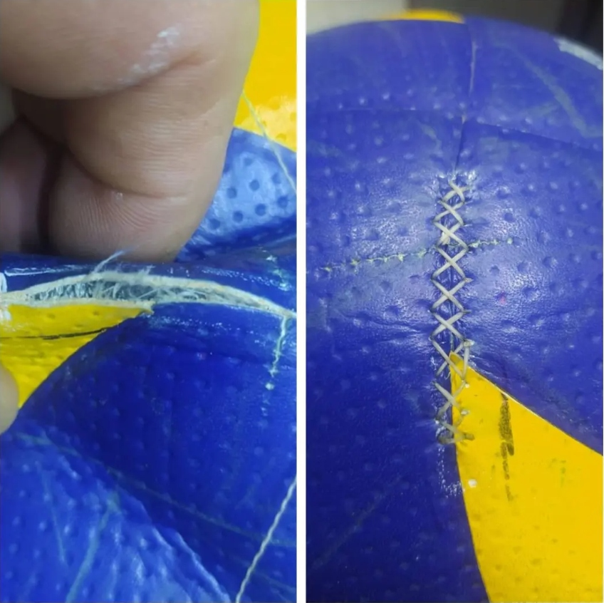
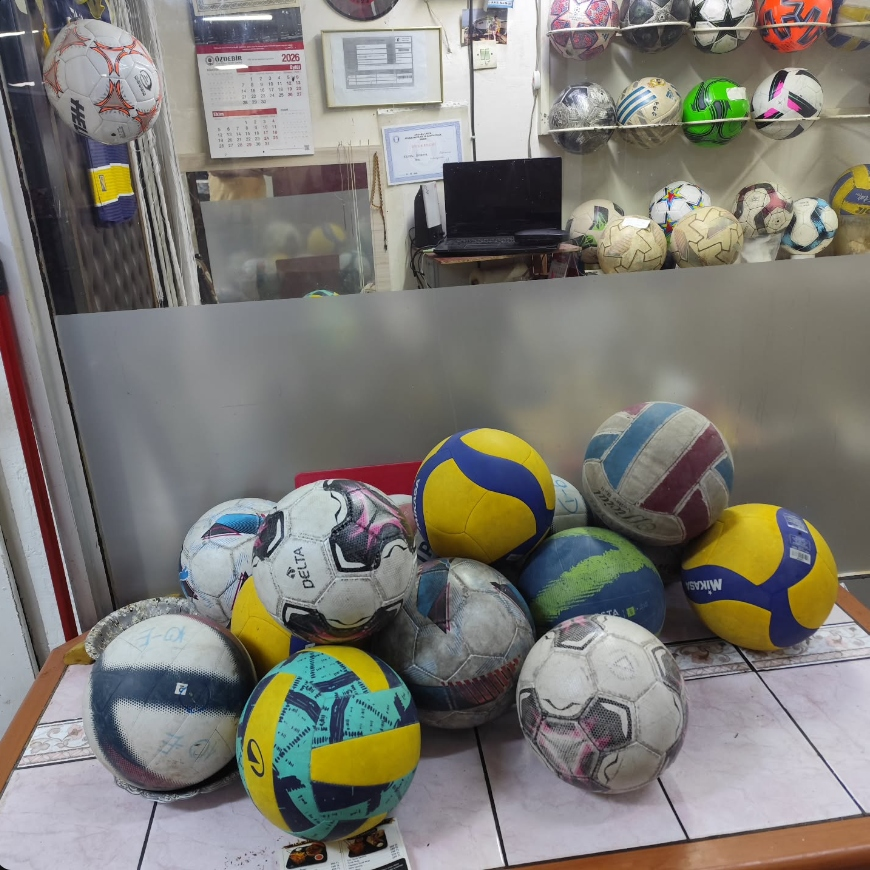

Öncesi & Sonrası: Cerrahi El Dikişi
Patlamış, dikişi atmış ve kullanılamaz hale gelen topları orijinal fabrika mukavemetine kavuşturuyoruz.

Mikasa Voleybol Topu Panel & Dikiş Kurtarma
Fotoğrafta görüldüğü gibi, dikiş hattından patlayarak açılan profesyonel voleybol topu; özel balmumlu mukavemet ipiyle, panel altı destek astarı yerleştirilerek çift çapraz cerrahi el dikişi ile sıfır bombe ve kusursuz aerodinamik dengede dikilmiştir.
- ✓ Kopmaz Balmumu İp: Neme, tere ve sert smaç darbelerine karşı tam mukavemet.
- ✓ İç Lastik Emniyeti: İğne ve dikiş iç lastiğe temas etmez, delinme riski sıfırlanır.
- ✓ Orijinal Balans: Dikiş ağırlığı ve esnekliği maç standartlarına birebir uygundur.
Popüler Tamir Paketlerimiz
En çok tercih edilen bakım hizmetlerimiz.
Topunuz İçin Doğru Servisi Seçin
Hasar türüne göre uzman onarım — her marka, her model.
Topunuza Uygun Onarımı Bulun
Topunuzun markasını ve hasar durumunu seçin, size uygun hizmetleri anında listeleyelim.
📬 Bizimle İletişime Geçin & Atölye Vitrini
Sorularınız için formu doldurun veya WhatsApp'tan ulaşın — en kısa sürede dönüş yaparız!
Çalışma Saatleri
Hafta içi 10:00 – 18:00
Telefon

🏢 Atölyemize Doğrudan Uğrayın
Kemal Usta'nın bizzat çalıştığı Kızılay Menekşe Pasajı'ndaki dükkânımıza topunuzu doğrudan getirebilir, teslim masasında hasar tespitini birlikte yapabilirsiniz.
İzmir caddesi, Menekşe-1 Sk. No:5 D:46, 06440 Çankaya/Ankara (Menekşe Pasajı)
Google'da %100 Memnuniyet
40 yıllık tecrübeyle sporcuların, kulüplerin ve ailelerin top tamirindeki ilk tercihi.
Top Tamiri · Top Onarım & Bakım Servisi (Kızılay/Ankara)
"Molten basketbol topumun sibop kaçırma sorunu vardı, başka yerler tamir edemeyiz yenisini al demişti. Kemal Usta 1 günde orijinal sibop takıp sıfır gibi teslim etti. 40 yıllık tecrübe gerçekten fark yaratıyor."
"Takımımızın 8 adet maç topunun dikiş açılmalarını ve basınç kayıplarını getirdik. Fabrika dikişi kalitesinde el işçiliğiyle onardı. Kulüp bütçemizi kurtardı, eline sağlık Kemal Usta."
"Orijinal Adidas Şampiyonlar Ligi topum patlamıştı, atmaya kıyamıyordum. Kemal Bey iç lastiğini değiştirip su altı basınç testini gözümün önünde yaptı. Ankara'da bu işin tek ustası."
"Mikasa voleybol topumun soyulan ve kalkan deri panellerini pürüzsüz yapıştırdı. Topun ağırlık dengesi ve yumuşaklığı hiç bozulmadı, çok teşekkürler Top Tamiri!"
Sıkça Sorulan Sorular
Tamir süreciyle ilgili merak ettikleriniz.
Tamir işlemi ne kadar sürer?
Sibop değişimi ve basınç testi gibi basit işlemler genellikle aynı gün yapılır. Dikiş ve panel onarımları, hasarın durumuna göre 1–3 iş günü içinde tamamlanır.
Fiyatı nasıl öğrenirim?
Topunuzun veya hasarlı bölgenin fotoğrafını WhatsApp'tan gönderin ya da dükkânımıza getirin; inceleyip size bilgi verelim. Onayınız olmadan işleme başlamayız.
Hangi marka topları tamir ediyorsunuz?
Adidas, Nike, Puma, Select, Molten, Mikasa, Wilson, Spalding, Delta ve diğer markaların futbol, basketbol ve voleybol toplarını onarıyoruz.
Topumu nasıl teslim ederim?
Topunuzu dükkânımıza getirebilirsiniz: İzmir Cad. Menekşe Sok. Menekşe Pasajı Kızılay/ANKARA. Gelmeden önce WhatsApp'tan bilgi alabilirsiniz.
Topumun tamir edilip edilemeyeceğini nasıl anlarım?
Topunuzun hasarlı bölgesinin fotoğrafını WhatsApp'tan gönderin; inceleyip size en kısa sürede dönüş yapalım.